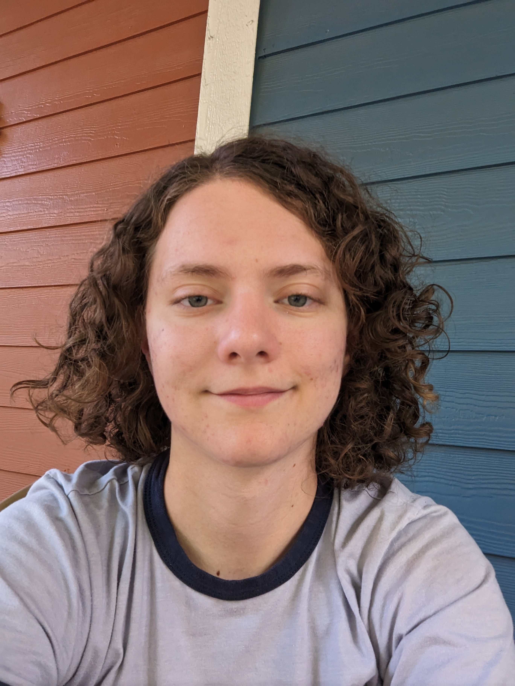

About Me
I am currently enrolled at University of Colorado Denver, where I am Pursuing a Graduate GIS certificate. In 2024 I got a got a Bachelor of Arts in Math and Data Science from Warren Wilson College. I am living and working in Denver, Colorado. I dream of being able to design cities to better serve the people and the communities that contain them. I grew up in an alternative living environment, known as cohousing, where community was an intentional aspect of the space's design. A fun fact about me is that I basket weave (not underwater) as a creative expression.
My Resume
Projects
Work for GEOG 5230 Hazard Mitigation and Vulnerability Assessment
Here is a map showing the evaluation routes in case of a earthquake. This work was done for a class at University of Colorado Denver, GEOG 5230 Hazard Mitigation and Vulnerability Assessment.
Work for GEOG 5230 Hazard Mitigation and Vulnerability Assessment
Here is a presentation talking about Flood mapping tools in Lyons Colorado. This work was done for a class at University of Colorado Denver, GEOG 5230 Hazard Mitigation and Vulnerability Assessment.